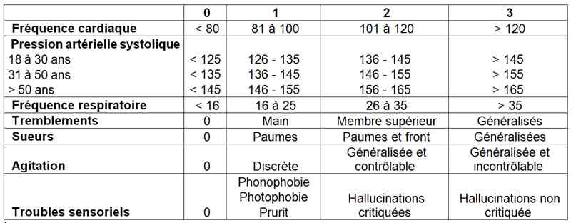
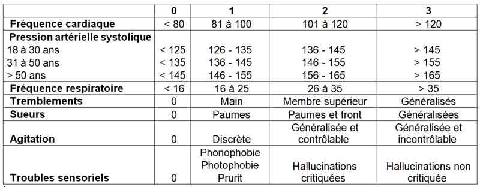

Bienvenue Sur Medical Education
Sevrage alcoolique et delirium tremens
Spécialité : metabolisme /
Points importants
-
Définition : se définit comme l'arrêt de consommation d'alcool. Le syndrome de sevrage alcoolique peut apparaître jusqu'au 10e jour après l'arrêt de la consommation
-
Pathologie très fréquente aux urgences
-
Prévalence importante : 50% des patients hospitalisés ont une alcoolo-dépendance nulle ou minime
-
C'est une urgence médicale
-
Nécessité d'un repérage précoce des patients à risques et traitement rapide des manifestations précoces :
-
antécédent de crise convulsive généralisée ou suite immédiate de crise convulsive généralisée risque de décompensation multiplié par 10
-
antécédent de DT (risque multiplié par 16)
-
Les critères de Cushman permettent de classer les patients dans 3 groupes en fonction de leur gravité
-

_802
Tableau
Critères de Cushman
-
score < 7 : état clinique contrôlé
-
score 7 à 14 : sevrage modéré
-
score > 14 : sevrage sévère
-
Le syndrome de sevrage signe une dépendance physique déjà installée
-
Souvent découverte après 6-12 heures d'hospitalisation pour un autre motif (AVP, infection, autre, ...)
-
Toujours rechercher la cause de l'arrêt de l'intoxication alcoolique
-
Delirium tremens : complication présente dans seulement 3-5% des sevrages alcooliques, mais plus fréquente en cas de pathologie intercurrente, notamment infectieuse
Présentation clinique / CIMU
SIGNES FONCTIONNELS
- antécédent de crise convulsive généralisée ou suite immédiate de crise convulsive généralisée risque de décompensation multiplié par 10
- antécédent de DT (risque multiplié par 16)
-  _802 Tableau Critères de Cushman
-
score < 7 : état clinique contrôlé
-
score 7 à 14 : sevrage modéré
-
score > 14 : sevrage sévère
Présentation clinique / CIMU
SIGNES FONCTIONNELS
Troubles subjectifs
- Anxiété, agitation, irritabilité, insomnie
Troubles neurovégétatifs
- Sueurs, tremblements
Troubles digestifs
- Douleurs abdominales, nausées, vomissements, anorexie
Aggravation rapide avec
- Hyperthermie
- Hallucinations, confusion
-
Delirium tremens :
- association d'une confusion mentale = delirium (désorientation temporospatiale, inversion du rythme nycthéméral) aux trémulations, parfois compliqué d'illusions ou hallucinations (visuelles le plus souvent, zoopsies fréquentes, mais aussi tactiles ou auditives)
CONTEXTE
Terrain
- Patient alcoolo-dépendant depuis plusieurs années
- Un syndrome identique peut survenir de façon décalée lors d'un sevrage en benzodiazépines
Traitement usuel
- Rechercher les benzodiazépines
- Cas particulier des patients traités par bêtabloquants qui minimisent les troubles
Antécédents
- Rechercher les ATCD identiques et les crises d'épilepsie de sevrage
- Existence d'ATCD de Pré DT ou DT, de crise comitiale généralisée
Circonstances de survenue
- Arrêt de la consommation d'alcool dans les heures ou les jours précédents (notamment en cas d'hospitalisation), mais aussi syndrome infectieux
EXAMEN CLINIQUE
- Tachycardie > 100/min
- HTA fréquente
- T° (un fébricule à 38°C est fréquent du fait de l'hyperactivité sympathique, mais toute fièvre à 39°C doit faire rechercher une infection)
-
Rechercher une localisation infectieuse :
- pneumopathie
- décompensation d'une hépatopathie
- syndrome méningé, ...
-
Rechercher des signes neurologiques :
- de localisation neurologique (notamment cérébelleux et oculomoteurs)
- agitation psychomotrice
- Crises d'épilepsie, état de mal
- Eventuellement, existence d'autres signes d'alcoolo-dépendance (faciès vultueux, signes d'insuffisance hépatique: hépatomégalie, angiome stellaires, ou d'hypertension portale : splénomégalie, ascite)
EXAMENS PARACLINIQUES SIMPLES
- Glycémie capillaire à la recherche d'une hypoglycémie
- SpO2 à la recherche d'une désaturation associée à une pneumopathie (facteur déclenchant ?)
- ECG
CIMU
- Variable en fonction de la gravité du patient
Signes paracliniques
-
Aucun signe paraclinique de sevrage alcoolique
BIOLOGIQUE
Des signes de dépendance alcoolique et d'insuffisance hépatique peuvent être retrouvés
Nécessité de rechercher un facteur décompensant
- NFS : polyglobulie, macrocytose, thrombopénie
- CRP
- Bilan hépatique : cytolyse, augmentation des Gamma-GT
- Bilan d'hémostase avec TP bas
- Ionogramme sanguin à la recherche de troubles ioniques
- Hémocultures si fièvre
- Ponction lombaire en cas de fièvre et selon l'examen clinique
IMAGERIE
- Radio de thorax face + profil à la recherche d'une pneumopathie
- TDM cérébrale non nécessaire en l'absence de signe de localisation neurologique mais à réaliser en cas de doute
Diagnostic étiologique
-
Dépendance alcool ancienne avec réduction ou arrêt récent (6 h à 2 jours des consommations)
-
Se méfier des co-dépendances alcool + benzodiazépines qui donnent des sevrages décalés dans le temps (10 jours environ)
Diagnostic différentiel
DU SEVRAGE ALCOOLIQUE
-
Hypoglycémie
-
Sevrage en benzodiazépines (souvent associé)
DU DELIRIUM TREMENS
Diagnostic différentiel
DU SEVRAGE ALCOOLIQUE
- Hypoglycémie
- Sevrage en benzodiazépines (souvent associé)
DU DELIRIUM TREMENS
Encéphalopathie de Gayet-Wernicke
- Confusion
- Trémulations
- Signes cérébelleux ou paralysies oculomotrices
- Par avitaminose B1
- Traitement présomptif identique
- Diagnostic de certitude différé par dosage de la vitamine B1
Confusion mentale d'autre étiologie cérébrale chez un patient alcoolique
- Traumatique (hématomes extra- sous-dural)
- Vasculaire
- Infectieuse
- A évoquer si la confusion ne régresse pas en quelques heures avec le traitement ou si signes de localisation neurologiques
Traitement
TRAITEMENT PREHOSPITALIER/INTRAHOSPITALIER
Commencer traitement dans l'immédiat si
- ATCD de crise convulsive généralisée et de DT
- Score de Cushman > 8
- Patient sous bêtabloquant score de Cushman > 6
- Avec transfert en REANIMATION si score de Cushman > 15
Pour tous les malades : traitement de « BASE »
-
Hydratation, à la demande en fonction de la soif du patient, privilégier la voie orale, éviter les glucosés
-
Vitaminothérapie :
-
la vitamine B1 est indispensable
-
si sevrage simple sans confusion : B1 per os 500 mg /j
-
si delirium et patient perfusé: B1 dans les poches de perfusion : 500 mg à 1g/jour, attention voie IM si troubles de coagulation !
-
+ PP (500 mg par jour) + B6 (500 mg par jour)
-
Et selon les cas
-
Score de Cushman < 8 à l'arrivée et absence d'ATCD de crise convulsive généralisée et/ou DT :
-
traitement de base maintenu pendant 6 jours
-
-
Score de Cushman < 8 et ATCD de crise convulsive généralisée et/ou DT :
-
traitement de base
-
traitement dit « d'entretien » :
-
propranolol 160 LP un cp par jour sur 7 jours
-
diazépam 10 mg : J0 1 cp / 4 h, J1 1 cp / 6 heures, J2 1 cp / 8 heures, J3 1 cp / 12 heures, J4 1 cp le soir
-
-
-
Score de Cushman > 8 à l'arrivée ou en cours d'évolution et en cas de crise convulsive généralisée à l'arrivée :
-
traitement de base
-
traitement de « charge » sur 6 heures :
-
1 cp de 10 mg de diazépam toutes les heures, soit 60 mg au total
-
1 cp de propranolol 160 LP par jour
-
-
-
Score < 8 : traitement « d'entretien » systématique même si état clinique très amélioré
-
Score > 8 :
-
poursuite du diazepam 10 mg, un cp/heure jusqu'à endormissement
-
dexaméthasone 20 mg IV 2 fois par jour pendant 48h
-
-
Score de Cushman > 15 à l'arrivée ou au cours de l'évolution transfert en réanimation :
-
garder aux urgences les premières heures du traitement jusqu'à diminution des signes cliniques
-
hydratation :
-
per os si le patient peut boire : 4 L/24h, eau mais aussi bouillons salés, jus de fruits
-
IV si trop de trémulations ou confusion : perfusion en évitant les solutés glucosés (favorisent l'avitaminose B1) : NaCl 4 g/24h + 2g KCl/L à adapter selon le degré d'hydratation du patient.
-
vitamines B1 (1g par jour) en IV lente dans la perfusion
-
-
MEDICAMENTS
Benzodiazépines
-
Indispensables
-
Si voie per os est possible: diazépam ; dose à adapter selon le score de Cushman
-
Si voie per os impossible : diazépam 10 mg 2 ampoules/2 h en IVL sauf si le patient dort
-
La dose totale de diazépam sera comprise entre 40 et 160 mg/j selon la tolérance du patient (favorisée par des années d'induction enzymatique par l'alcool)
Neuroleptiques
- Si hallucinations non contrôlées par les benzodiazépines : Haldol® 2 mg per os en solution buvable 3 x/ j
- Si voie per os impossible : Haldol® ampoules 5 mg à passer dans la perfusion en IVL, 1 à 2/jour
Surveillance
CLINIQUE
-
Clinique avec le score de Cushmann. La durée minimum de surveillance est de 48 heures
Score de Cushman < 8
- Pas d'ATCD de crises convulsives généralisées / DT : surveillance / 6h
- ATCD de crises convulsives généralisées / DT + : surveillance / 4h
Score de Cushman > 8 à l'arrivée ou en cours d'évolution et en cas de crise convulsive généralisée à l'arrivée
- Surveillance horaire avec, à H6, nouveau score de Cushman
PARACLINIQUE
- Non nécessaire
Devenir / orientation
CRITERES D'ADMISSION
-
Delirium tremens
-
Confusion
-
Ou si patient vivant seul et peu fiable (SDF+++)
CRITERES DE SORTIE
-
Un sevrage simple chez un patient capable de prendre le traitement en ambulatoire (bonne compréhension des consignes, entourage, pas SDF) ne nécessite pas d'hospitalisation
-
Bonne réponse au traitement : régression des trémulations et des sueurs
-
Absence de confusion
ORDONNANCE DE SORTIE
-
Poursuite du traitement pendant 5 jours
-
Benzodiazépines à la dose qui a été efficace chez le patient
-
Vitamines B1-B6 250 mg : 4/j
-
Hydratation 3 L/j
RECOMMANDATIONS DE SORTIE
-
A la sortie, le patient doit être informé que le sevrage et a fortiori le delirium sont des signes de dépendance physique à l'alcool
-
Tout arrêt brutal ultérieur sera suivi des mêmes symptômes
-
Trois conséquences :
-
il est temps pour lui d'arrêter : proposer au patient de l'orienter vers son médecin généraliste ou vers une consultation spécialisée pour la prise en charge de sa dépendance à l'alcool
-
signaler en cas d'hospitalisation ultérieure l'antécédent de sevrage pour recevoir le traitement préventif
-
ne pas arrêter seul sans suivi médical
Bibliographie
-
Marc A. Schukit, Alcohol-Related disorders in Kaplan and Sadock's Comprehensive Textbook of Psychiatry, 7th edition, vol 1, pp 963-71, Lippincott Williams and Wilkins, New York 1999
-
Conférence de consensus : objectifs, indications et modalités du sevrage du patient alcoolo-dépendant. HAS Mars 1999
-
Sellers EM, Naranjo CA, HarrissonnM et al. Diazepam loading : simplified treatment alcohol withdrawal. Clin Pharmacol Ther, 1983, 34: 822-826
-
Kraus ML, Gottlieb LD, Horwitz RI e al. Randomized trial of atenolol in patients with alcohol withdrawal. N engl. J Med, 1985, 313 : 905-910
-
Pol S, Nalpas B, berthelot P, dexamethasone for alcohol witrhdrawal. Ann Intern Med 1991, 114: 705-706
-
Worner,TM Relative kindling effect of readmissions in alcoholics. Alchol,1996,31: 375-380
- il est temps pour lui d'arrêter : proposer au patient de l'orienter vers son médecin généraliste ou vers une consultation spécialisée pour la prise en charge de sa dépendance à l'alcool
- signaler en cas d'hospitalisation ultérieure l'antécédent de sevrage pour recevoir le traitement préventif
- ne pas arrêter seul sans suivi médical
Bibliographie
- Marc A. Schukit, Alcohol-Related disorders in Kaplan and Sadock's Comprehensive Textbook of Psychiatry, 7th edition, vol 1, pp 963-71, Lippincott Williams and Wilkins, New York 1999
- Conférence de consensus : objectifs, indications et modalités du sevrage du patient alcoolo-dépendant. HAS Mars 1999
- Sellers EM, Naranjo CA, HarrissonnM et al. Diazepam loading : simplified treatment alcohol withdrawal. Clin Pharmacol Ther, 1983, 34: 822-826
- Kraus ML, Gottlieb LD, Horwitz RI e al. Randomized trial of atenolol in patients with alcohol withdrawal. N engl. J Med, 1985, 313 : 905-910
- Pol S, Nalpas B, berthelot P, dexamethasone for alcohol witrhdrawal. Ann Intern Med 1991, 114: 705-706
- Worner,TM Relative kindling effect of readmissions in alcoholics. Alchol,1996,31: 375-380
Auteur(s) : Florence VORSPAN, Saena BOUCHEZ, Bertrand GALICHON